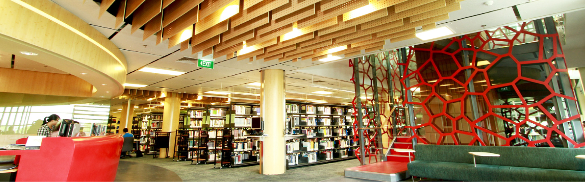

Name: Tran Vinh Tuong
ID: S3878734
Action plans
After finishing the Introduction to Science and Technology course, I have learned and gain many new things to aid me on my journey as an RMIT student such as the advantages that come with the library, the benefits of knowing the right ways to do research, be an active learner, learning about cryptography, etc. Furthermore, this course has introduced me to where and how to use various facilities provided by the university like the library, lab rooms, medical center, and even our very own sports and recreation building dedicated to the student body’s health and exercise. These facilities are shown online in order for the student body to utilize the resources appropriately to ensure their best result.
But only knowing using the available resources is still not enough. Ever since entering the university, I know that a different approach in my way of learning is required and thus I started to mold myself to become an active and independent learner if I want to get my desired result. In addition to reviewing previous materials, I started to familiarize myself to interact more during lecture, sharing my experience, and looking up the available pre-class materials to make questions to ask in the lecture. But that will still only take me halfway through my student life. To be a good student, I have to know how to manage my timetable appropriately so as to not waste too much of my time. I can not deny that playing games is what I did most in my free time when I was growing up. Luckily it is not so bad to labor it addicted but if I don’t play at least one or two games a day, I will feel conflicted and agitated and can not focus on the job at hand. And so, I have decided to set three-thirty minutes breaks in my free time so that after a period of self-study, I can allow my brain to relax before resuming on school-related project and if I get stuck, I can reschedule my timetable and set up a meeting on RMIT connect to have a meeting with SAS for support.
